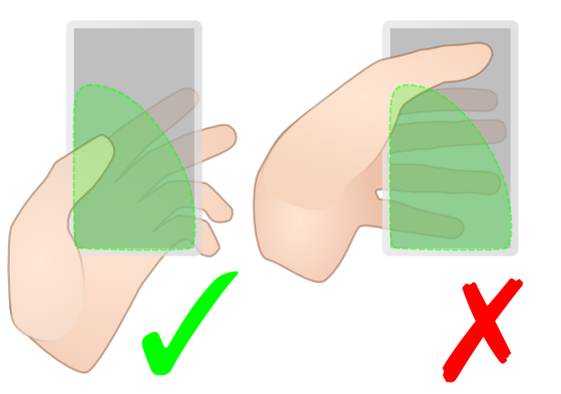
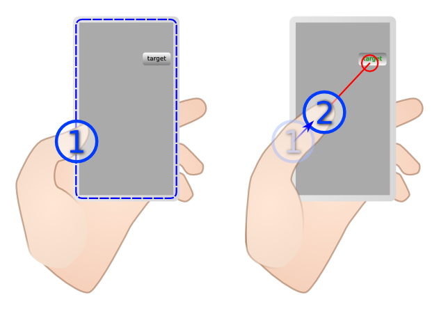

GE4102
Video Game: History, Industry, Society, and Creativity
Video Game: History, Industry, Society, and Creativity
Week 1
Andy Li
PhD student
(under the supervision of Dr. Hongbo Fu)
Interests
- Human-Computer-Interaction
- Installation Art
- Programming
Augmented Mirror
http://augmented-mirror.onthewings.net/air-drum/
An Augmented Reality system using an one-way mirror.


BezelCursor
An interaction method for mobile device.
Mobile screen is often too large for single-hand use.
BezelCursor is here to help.
